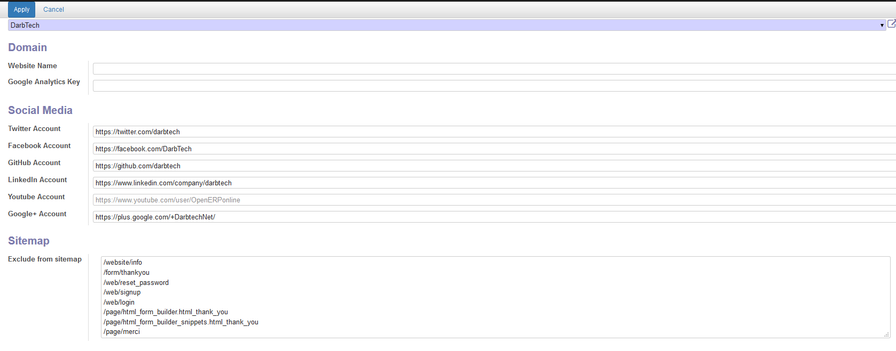

<section class="oe_container">
	<div class="oe_row">
		<h1 class="oe_slogan">Website sitemap filter</h1>
	</div>
</section>

<section class="oe_container">
	<div class="oe_row">
		<h2 class="oe_slogan">Allows to filter entries in auto generated sitemap</h2>
		<div class="oe_span6">

			<ul>
				<li> <p class='oe_mt32'>		
						Define the excluded URL 
					</p></li>
				<li> <p class='oe_mt32'>		
						And then ... they will not be anymore in the website sitemap.xml
					</p></li>
			</ul>


		</div>
		<div class="oe_span6">
			<div class="oe_bg_img">
				
			</div>
		</div>
	</div>
</section>

<section class="oe_container oe_dark">
	<div class="oe_row">
		<div class="oe_row">
			<h3 class="oe_slogan">
				<strong>For any assistance request, please drop up as mail: support [at] <a href="http://darbtech.net">darbtech.net</a>
				</strong>
			</h3>
		</div>
	</section>